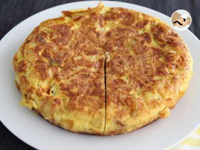
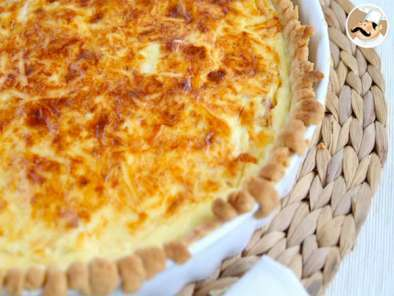

Prato Principal
Tortilha-de-batatas-com-cebola

Ingredientes
- 1/2 xícara de chá de oléo
- 2 batatas médias cortadas em rodelas finas
- 2 cebolas médias cortadas em rodelas finas
- 6 ovos batidos
- Tempero a gosto
- 1 colher de chá de sal
- 2 colheres (sopa) de azeite
- sal a gosto
Modo de preparo
Modo de preparo : 25min
- Em uma frigideira grande, coloque o óleo e leve ao fogo alto para aquecer.
- Junte as batatas e frite, aos poucos por 3 minutos de cada lado, ou até que fiquem douradas.
- Escorra em papel absorvente e reserve.
- Acrescente as cebolas e refogue por 3 minutos, ou até murcharem.
- Escorra.
- Na mesma frigideira, coloque os ovos previamente temperados com o sal e temperos a gosto, e coloque as batatas e as cebolas.
- Frite em fogo médio por 5 minutos, ou até que a parte superior esteja consistente.
- Vire com o auxílio de um prato e deixe por 5 minutos.
- Retire do fogo e sirva em seguida.
Quiche-de-bacon-do-petitchef

Ingredientes
- 1 rolo de massa quebrada comprado ou 1 bola (400 g) de massa quebrada caseira
- queijo ralado q.b.
- 400 ml de natas / creme de leite
- 100 g de bacon
3 ovos
Modo de preparo
Modo de preparo : 20min
- Esticar a massa numa superfície enfarinhada.
- Passo 2 - Quiche de bacon do PetitChefColocar sobre o molde e picar com um garfo.
- Pôr no forno por 7 min a 200ºC e deixar esfriar.
- Passo 3 - Quiche de bacon do PetitChefAgora prepare o recheio simplesmente misturando todos os ingredientes.
- Passo 4 - Quiche de bacon do PetitChefVerter sobre a massa já cozida.
- Polvilhar de queijo ralado.
- Passo 5 - Quiche de bacon do PetitChefPôr no forno por 30-40 min a 180ºC. Deixar esfriar e já está !